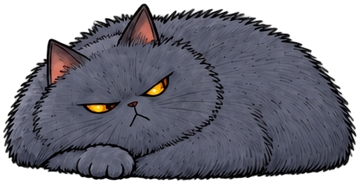
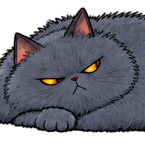

01 固定抽帧
Agent 给嘿姆的结论
AGENT MISSION / 03
嘿姆在监看台等着核验 08 号站。现场有 9 帧画面，但你只能交给 Agent 3 帧。先看固定抽帧，再亲手换中间一帧，让 Agent 把有依据的判断带给嘿姆。

系统会按固定间隔留 3 帧。
可以逐帧查看，不用拼反应速度。

嘿姆收到的画面 / 同一段原片Agent 给嘿姆的结论
Agent 给嘿姆的结论
点开任意一帧，核对画面以及哪一轮把它交给了 Agent。
这是用固定画面和字幕做的模拟，不读取摄像头或麦克风，也不调用模型。记录在本页，刷新会清空；复盘不代表能力认证。